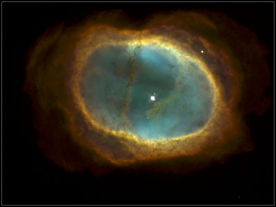

Nebula Design Contest

The 8th Nebula Contest was to design a scout ship for a pocket empire with a small amount of relic equipment. The vote totals were:
Rhino Hunter
by Nick Bradbeer 1.875
Pathfinder
by Lewis Roberts 1.875
Guppy
by Kyle Platte 2.625
Mudskipper
by Kyle Platte 3.75
Vulpine by
Rupert Boleyn 3.75
Receiving first place votes were Rhino Hunter (5), Pathfinder (3) and Guppy (1).